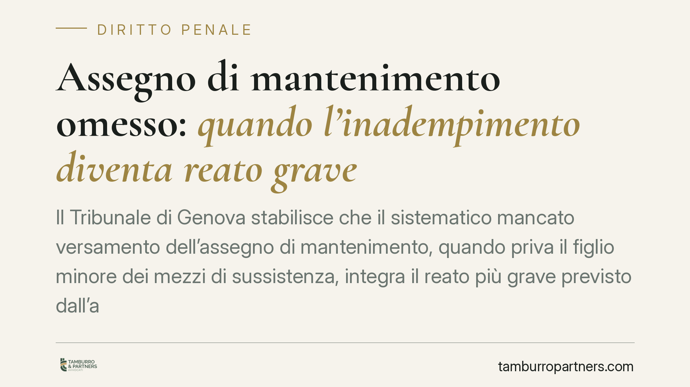

Assegno di mantenimento omesso: quando l'inadempimento diventa reato grave
Il Tribunale di Genova stabilisce che il sistematico mancato versamento dell'assegno di mantenimento, quando priva il figlio minore dei mezzi di sussistenza, integra il reato più grave previsto dall'art. 570 c.p. La fattispecie minore resta assorbita e l'intervento economico dei nonni non cancella la responsabilità penale del genitore inadempiente. Una pronuncia che alza l'asticella sul piano sanzionatorio.

Il caso
Un genitore smette sistematicamente di versare l'assegno di mantenimento dovuto ai figli minori. I nonni intervengono per coprire le necessità quotidiane dei bambini. La difesa sostiene che, grazie a quell'aiuto, i minori non sarebbero mai rimasti privi del necessario: dunque non ricorrerebbe l'ipotesi più grave di reato.
Il Tribunale di Genova, Sezione II, respinge la tesi. L'omesso pagamento prolungato che fa venir meno i mezzi di sussistenza integra la fattispecie più severa, a prescindere dal soccorso dei familiari.
Inquadramento normativo
Occorre distinguere due piani.
L'art. 570-bis del codice penale punisce la violazione degli obblighi di assistenza familiare in caso di separazione o divorzio: colpisce chi non versa l'assegno stabilito dal giudice civile. È la norma "di settore", pensata per gli inadempimenti del coniuge o genitore separato.
L'art. 570, comma 2, n. 2, c.p. descrive invece una condotta più grave: far mancare i mezzi di sussistenza ai discendenti minori. Qui non si punisce il semplice mancato rispetto di un provvedimento, ma la privazione del necessario per vivere — vitto, alloggio, cure, istruzione di base.
Il Tribunale ritiene che, quando l'inadempimento raggiunge questa soglia, la condotta più grave assorbe quella minore. In altre parole, non si contestano due reati distinti: prevale l'ipotesi dell'art. 570. Trattandosi di omissioni ripetute nel tempo, trova applicazione anche l'art. 81 c.p. sulla continuazione, che aggrava il trattamento sanzionatorio.
Il punto decisivo: l'aiuto dei nonni
L'aspetto centrale della pronuncia riguarda il ruolo dei familiari. Secondo il Tribunale, l'intervento economico dei nonni non esclude il reato.
La ragione è semplice: l'obbligo di mantenere i figli grava sul genitore. Il fatto che altri parenti si attivino per supplire alla sua latitanza non trasforma l'inadempimento in un comportamento lecito. Lo stato di bisogno dei minori va valutato in astratto, cioè rispetto a ciò che il genitore avrebbe dovuto garantire, non rispetto al risultato concreto raggiunto grazie a terzi.
Ragionare diversamente premierebbe il genitore inadempiente proprio là dove la rete familiare funziona, scaricando su nonni o altri parenti un onere che la legge pone a suo carico.
Implicazioni pratiche
Per il genitore obbligato, la pronuncia comporta un rischio concreto: l'inadempimento protratto può essere qualificato non come semplice violazione dell'assegno, ma come reato più grave, con conseguenze sul piano della pena e della fedina penale.
Non basta sostenere che i figli "non hanno patito privazioni". Se la provvista è arrivata da altri, la responsabilità resta. Nemmeno le difficoltà economiche esonerano automaticamente: la giurisprudenza richiede la prova di una impossibilità effettiva, assoluta e incolpevole di adempiere, non un semplice peggioramento della situazione reddituale.
Per il genitore che subisce l'inadempimento, la decisione offre uno strumento in più. Documentare l'intervento dei nonni non indebolisce la posizione: serve anzi a dimostrare la persistenza del bisogno e la sistematicità delle omissioni.
Cosa fare in concreto
- Se sei il genitore obbligato e non riesci a pagare: non limitarti a sospendere i versamenti. Attivati subito per modificare l'assegno davanti al giudice civile, documentando la variazione reddituale. L'inerzia è l'elemento che aggrava la posizione penale.
- Conserva ogni prova dei pagamenti effettuati: bonifici, ricevute, contributi in natura. In sede penale la prova dell'adempimento, anche parziale, è decisiva.
- Se sei il genitore che subisce l'omissione: raccogli e ordina la documentazione delle mancanze — estratti conto, solleciti, spese sostenute da te o dai nonni per i minori.
- Valuta insieme a un legale la strada da percorrere: azione civile per il recupero delle somme, querela per il profilo penale, o entrambe. Le due tutele viaggiano su binari distinti ma possono coesistere.
- Non confondere i due reati: la qualificazione della condotta incide in modo significativo sulla pena. Una verifica preliminare della fattispecie applicabile orienta ogni scelta successiva.
---
*Contributo informativo a cura di Tamburro & Partners - Avv. Giuseppe Tamburro. Non costituisce parere legale.*
Ogni condominio ha una storia a sé.
Se gestisci un'amministrazione e vuoi un confronto su una specifica questione condominiale, scrivi allo studio. Ti rispondiamo entro un giorno lavorativo.